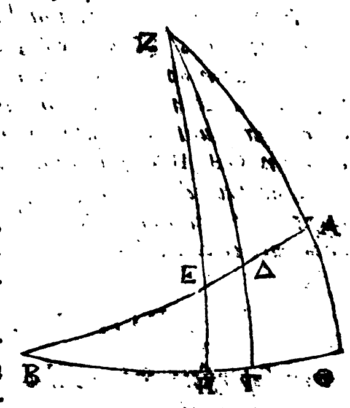
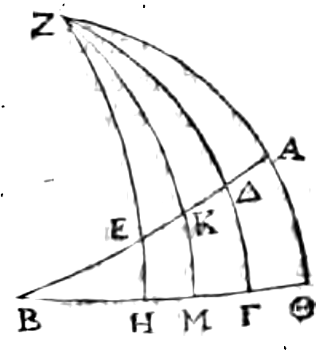
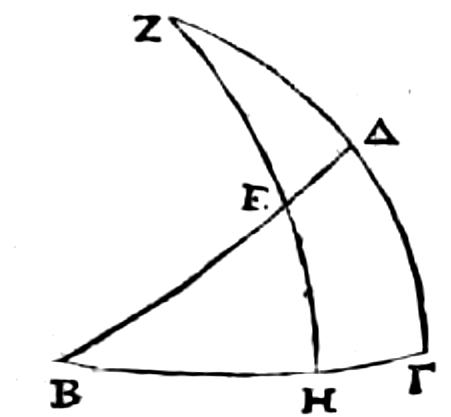
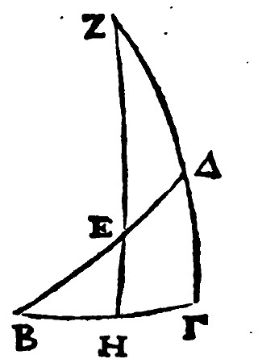
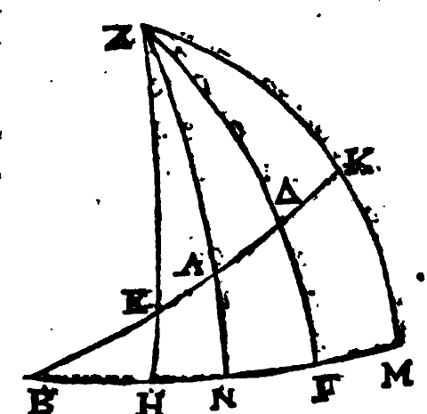

Proposition III.15 — Theorem: Final Arc-Sine & Small-Circle Bounds (Finis)¶
Menelai Alexandrini Sphaericorum Lib. III Prop. XV. Theor. (Halley 1758, pp. 107–112)
Enunciation (Halley 1758, p. 107)
If upon the surface of a Sphere two great circles be inclined to one another, and on one of them two points be taken, through which two arcs be drawn to the other at right angles to the same: then the sine of the arc intercepted between the feet of the two perpendiculars shall be to the sine of the arc between the two taken points, as the rectangle contained under the semidiameter of the Sphere and the semidiameter of the circle which touches one of the circles and is parallel to the other is to the rectangle under the semidiameters of two circles passing through the two taken points and parallel to the other of the said great circles.


Part I — Fundamental Rectangle of Semidiameters (p. 108). Let \(\mathrm{AB}, \mathrm{B\Gamma}\) be two great circles inclined to one another, and on \(\mathrm{AB}\) let two points \(\mathrm{\Delta}, \mathrm{E}\) be taken, through which let perpendiculars \(\mathrm{\Delta\Gamma}, \mathrm{EH}\) be drawn to arc \(\mathrm{B\Gamma}\): I say that the sine of arc \(\widehat{\mathrm{\Gamma H}}\) is to the sine of arc \(\widehat{\mathrm{E\Delta}}\), as the rectangle under the semidiameter of the sphere and the semidiameter of the circle parallel to \(\mathrm{B\Gamma}\) and touching circle \(\mathrm{BA}\) is to the rectangle under the semidiameters of the circles passing through points \(\mathrm{\Delta}, \mathrm{E}\) and parallel to circle \(\mathrm{B\Gamma}\).
Let arcs \(\mathrm{\Gamma\Delta}, \mathrm{HE}\) be produced to the pole of circle \(\mathrm{B\Gamma}\), which let be \(\mathrm{Z}\); and to \(\mathrm{BA}\) let arc \(\mathrm{AZ}\) be perpendicular. Now since both angles \(\angle \mathrm{ZAE}, \angle \mathrm{ZHB}\) are right, and angle \(\angle \mathrm{AEZ}\) is equal to angle \(\angle \mathrm{BEH}\), the sine of arc \(\widehat{\mathrm{AZ}}\) will be to the sine of arc \(\widehat{\mathrm{ZE}}\) (by Book III Prop. 2) as the sine of arc \(\widehat{\mathrm{BH}}\) is to the sine of arc \(\widehat{\mathrm{BE}}\). Moreover, figure \(\mathrm{B\Gamma ZAE}\) is after the manner of the figure of the first proposition of this Book; therefore the ratio of the sine of arc \(\widehat{\mathrm{\Gamma H}}\) to the sine of arc \(\widehat{\mathrm{\Delta E}}\) will be compounded of the ratio of the sine of arc \(\widehat{\mathrm{\Gamma Z}}\) to the sine of arc \(\widehat{\mathrm{Z\Delta}}\), and the ratio of the sine of arc \(\widehat{\mathrm{BH}}\) to the sine of arc \(\widehat{\mathrm{BE}}\). But this latter ratio was shown to be the same as the ratio of the sine of arc \(\widehat{\mathrm{AZ}}\) to the sine of arc \(\widehat{\mathrm{ZE}}\): wherefore the sine of arc \(\widehat{\mathrm{\Gamma H}}\) is to the sine of arc \(\widehat{\mathrm{\Delta E}}\) as the rectangle under the sines of arcs \(\widehat{\mathrm{\Gamma Z}}, \widehat{\mathrm{AZ}}\) is to the rectangle under the sines of arcs \(\widehat{\mathrm{\Delta Z}}, \widehat{\mathrm{ZE}}\). Now the sine of arc \(\widehat{\mathrm{\Gamma Z}}\) is the semidiameter of the sphere, and the sine of arc \(\widehat{\mathrm{AZ}}\) is the semidiameter of the circle passing through \(\mathrm{A}\) and parallel to circle \(\mathrm{B\Gamma}\), which also touches circle \(\mathrm{AB}\) at point \(\mathrm{A}\); and the sines of arcs \(\widehat{\mathrm{\Delta Z}}, \widehat{\mathrm{ZE}}\) are the semidiameters of the circles passing through points \(\mathrm{\Delta}, \mathrm{E}\) and parallel to the same circle \(\mathrm{B\Gamma}\). Thus the proposition is established.
Hence can be demonstrated, as we stated, the principal Proposition of the third book of the Sphaerica of Theodosius, yet in a different manner. For he shows that the ratio of arc \(\widehat{\mathrm{\Gamma\Theta}}\) to arc \(\widehat{\mathrm{A\Delta}}\) is less than the ratio of the diameter of the Sphere to the diameter of the circle parallel to \(\mathrm{B\Gamma\Theta}\) and touching circle \(\mathrm{AB}\) at point \(\mathrm{A}\). And this proposition is of Apollonius himself, in the book whose title is Liber הכללי (perhaps On Universal Principles). We, however, shall show in what follows how the matter stands universally, and when
f. 0125 · p. 109

the ratio of arc \(\widehat{\mathrm{\Gamma H}}\) to arc \(\widehat{\mathrm{\Delta E}}\) is greater than a certain ratio, and when less.
Part II — Maximal Difference Bound on Quadrants (p. 109–110). Now let two great circles \(\mathrm{AB}, \mathrm{B\Theta}\) be inclined to one another, and let a circle pass through the poles of both, as \(\mathrm{ZA\Theta}\), and let point \(\mathrm{Z}\) be the pole of circle \(\mathrm{B\Theta}\); also from point \(\mathrm{Z}\) let a great-circle arc \(\mathrm{ZKM}\) be drawn meeting arc \(\mathrm{AB}\) at \(\mathrm{K}\) in such a way that the sine of arc \(\widehat{\mathrm{ZK}}\) is a mean proportional between the sines of arcs \(\widehat{\mathrm{ZA}}, \widehat{\mathrm{Z\Theta}}\)—that is, so that the diameter of the circle passing through \(\mathrm{K}\) and parallel to circle \(\mathrm{B\Theta}\) is a mean proportional between the diameter of the Sphere and the diameter of the circle touching circle \(\mathrm{AB}\) and parallel to circle \(\mathrm{B\Theta}\): I say that the excess by which arc \(\widehat{\mathrm{BK}}\) surpasses arc \(\widehat{\mathrm{BM}}\) is given; and that this excess is greater than any other between any two arcs cut off in this manner.
For the sine of arc \(\widehat{\mathrm{MZ}}\) is to the sine of arc \(\widehat{\mathrm{ZK}}\) as the sine of arc \(\widehat{\mathrm{ZK}}\) is to the sine of arc \(\widehat{\mathrm{AZ}}\), and accordingly the sine of arc \(\widehat{\mathrm{M\Theta}}\) is to the sine of arc \(\widehat{\mathrm{AK}}\) as the sine of arc \(\widehat{\mathrm{KB}}\) is to the sine of arc \(\widehat{\mathrm{BM}}\). But arc \(\widehat{\mathrm{B\Theta}}\) is equal to arc \(\widehat{\mathrm{AB}}\); wherefore arc \(\widehat{\mathrm{\Theta M}}\) is equal to arc \(\widehat{\mathrm{BK}}\), and arc \(\widehat{\mathrm{KA}}\) to arc \(\widehat{\mathrm{BM}}\). Now since the sine of arc \(\widehat{\mathrm{MZ}}\) is to the sine of arc \(\widehat{\mathrm{ZK}}\) as the sine of arc \(\widehat{\mathrm{ZK}}\) is to the sine of arc \(\widehat{\mathrm{ZA}}\), the sine of \(\widehat{\mathrm{MZ}}\) will be to the sine of \(\widehat{\mathrm{ZA}}\)—that is, the diameter of the sphere to the diameter of the circle parallel to \(\mathrm{B\Theta}\) and touching circle \(\mathrm{AB}\) at point \(\mathrm{A}\)—as the square from the sine of arc \(\widehat{\mathrm{ZM}}\) is to the square from the sine of arc \(\widehat{\mathrm{ZK}}\), that is, as the square from the sine of arc \(\widehat{\mathrm{\Theta M}}\) is to the square from the sine of arc \(\widehat{\mathrm{AK}}\). Therefore componendo and dividendo, as the sum of the said diameters is to their difference, so is the sum of the squares of the sines of arcs \(\widehat{\mathrm{\Theta M}}, \widehat{\mathrm{KA}}\) (which together make up a quadrant)—that is, the square from the semidiameter of the sphere—to the difference of the squares of the same sines. But the said diameters are given; therefore that difference of the squares is given; and since their sum is also given, the squares themselves of the sines of arcs \(\widehat{\mathrm{\Theta M}}, \widehat{\mathrm{AK}}\) are given; therefore the arcs themselves are given, and consequently their difference is given. And since these two arcs taken together make up a quadrant of a circle, I say that their difference is greater than any other difference of arcs cut off in this manner.
For through the pole \(\mathrm{Z}\) let great-circle arcs \(\mathrm{Z\Delta\Gamma}, \mathrm{ZKM}, \mathrm{ZEH}\) be drawn,
f. 0126 · p. 110

and the sine of arc \(\widehat{\mathrm{\Gamma M}}\) will be to the sine of arc \(\widehat{\mathrm{K\Delta}}\) as the rectangle contained under the semidiameter of the sphere and the sine of arc \(\widehat{\mathrm{AZ}}\) is to the rectangle under the sines of arcs \(\widehat{\mathrm{\Delta Z}}, \widehat{\mathrm{ZK}}\). But the rectangle under the semidiameter of the sphere and the sine of arc \(\widehat{\mathrm{AZ}}\) is equal to the square from the sine of arc \(\widehat{\mathrm{KZ}}\); which square indeed is greater than the rectangle under the sines of \(\widehat{\mathrm{\Delta Z}}, \widehat{\mathrm{ZK}}\): wherefore arc \(\widehat{\mathrm{\Gamma M}}\) is greater than arc \(\widehat{\mathrm{\Delta K}}\). In like manner it will be demonstrated that arc \(\widehat{\mathrm{MH}}\) is less than arc \(\widehat{\mathrm{KE}}\). Since these things are so, the excess of arc \(\widehat{\mathrm{BK}}\) above arc \(\widehat{\mathrm{MB}}\) will be greater than the excess of arc \(\widehat{\mathrm{EB}}\) above arc \(\widehat{\mathrm{BH}}\), and greater than the excess of arc \(\widehat{\mathrm{\Delta B}}\) above arc \(\widehat{\mathrm{B\Gamma}}\). Whence it is manifest that arc \(\mathrm{ZKM}\) cuts off from the two circles \(\mathrm{AB}, \mathrm{B\Theta}\) two arcs whose difference is greater than that which exists between any other two arcs cut off in the same manner.
Part III — Upper & Lower Ratio Bounds of the Intercepted Arcs (pp. 110–112). Now let point \(\mathrm{Z}\) be the pole of circle \(\mathrm{BH\Gamma}\), and let arc \(\widehat{\mathrm{B\Delta}}\) be not greater than a quadrant; and let arcs \(\mathrm{\Gamma\Delta Z}, \mathrm{HEZ}\) pass through pole \(\mathrm{Z}\), so that arc \(\widehat{\mathrm{\Gamma H}}\) is greater than arc \(\widehat{\mathrm{\Delta E}}\): I say that the ratio of \(\widehat{\mathrm{\Gamma H}}\) to \(\widehat{\mathrm{\Delta E}}\) is less than the ratio of the diameter of the sphere to the diameter of the circle parallel to circle \(\mathrm{B\Gamma}\) and passing through point \(\mathrm{\Delta}\).
For since arc \(\widehat{\mathrm{AB}}\) is not greater than a quadrant, and arc \(\widehat{\mathrm{\Delta E}}\) is less than \(\widehat{\mathrm{\Gamma H}}\); the ratio of the sine of arc \(\widehat{\mathrm{\Gamma H}}\) to the sine of arc \(\widehat{\mathrm{\Delta E}}\) (by what has already been shown) is compounded of the ratio of the sine of arc \(\widehat{\mathrm{\Gamma Z}}\) to the sine of arc \(\widehat{\mathrm{Z\Delta}}\), and the ratio of the sine of arc \(\widehat{\mathrm{HB}}\) to the sine of arc \(\widehat{\mathrm{BE}}\); and \(\widehat{\mathrm{HB}}\) is less than \(\widehat{\mathrm{BE}}\): therefore the ratio of the sine of arc \(\widehat{\mathrm{\Gamma H}}\) to the sine of arc \(\widehat{\mathrm{\Delta E}}\) is less than the ratio of the sine of arc \(\widehat{\mathrm{\Gamma Z}}\) to the sine of arc \(\widehat{\mathrm{Z\Delta}}\), that is, than the ratio which the semidiameter of the sphere has to the semidiameter of the circle passing through \(\mathrm{\Delta}\) and parallel to circle \(\mathrm{B\Gamma}\). And since \(\widehat{\mathrm{\Gamma Z}}\) is a quadrant, and \(\widehat{\mathrm{\Gamma H}}\) is less than a quadrant, the ratio of arc \(\widehat{\mathrm{\Gamma H}}\) to \(\widehat{\mathrm{\Delta E}}\) will also be less than the said ratio of diameters.
And since the sine of arc \(\widehat{\mathrm{\Gamma H}}\) is to the sine of arc \(\widehat{\mathrm{\Delta E}}\) as the rectangle under the semidiameter of the sphere and the semidiameter of the circle which touches circle \(\mathrm{BE\Delta}\) and is parallel to the plane of \(\mathrm{B\Gamma}\) itself, is to the rectangle under the semidiameters of the circles passing through points \(\mathrm{\Delta}, \mathrm{E}\) and parallel to the same plane; if arc \(\widehat{\mathrm{\Gamma H}}\) be greater than \(\widehat{\mathrm{\Delta E}}\): I say that the ratio which arc \(\widehat{\mathrm{\Gamma H}}\) has to arc \(\widehat{\mathrm{\Delta E}}\) is greater than the said ratio of rectangles.
f. 0127 · p. 111

For since arc \(\widehat{\mathrm{\Gamma H}}\) is greater than arc \(\widehat{\mathrm{\Delta E}}\), the ratio of those same arcs will be greater than the ratio of the sine of arc \(\widehat{\mathrm{\Gamma H}}\) to the sine of arc \(\widehat{\mathrm{\Delta E}}\). And this ratio is that which the rectangle under the semidiameter of the sphere and the semidiameter of the circle touching \(\mathrm{B\Delta}\) and parallel to circle \(\mathrm{B\Gamma}\) has to the rectangle under the semidiameters of the circles parallel to the same \(\mathrm{B\Gamma}\) and passing through points \(\mathrm{\Delta}, \mathrm{E}\): therefore the ratio of arc \(\widehat{\mathrm{\Gamma H}}\) to arc \(\widehat{\mathrm{\Delta E}}\) is greater than the aforesaid ratio.
In the same way it will be established that if arc \(\widehat{\mathrm{\Gamma H}}\) be less than \(\widehat{\mathrm{\Delta E}}\), those arcs will be in a less ratio than those rectangles have to one another.
For let us suppose arc \(\widehat{\mathrm{\Gamma H}}\) to be less than arc \(\widehat{\mathrm{\Delta E}}\), and the rectangle under the semidiameter of the sphere and the semidiameter of the circle touching circle \(\mathrm{B\Delta}\) and parallel to \(\mathrm{B\Gamma}\) itself will be less than the rectangle under the semidiameters of the circles passing through points \(\mathrm{\Delta}, \mathrm{E}\) and parallel to the same plane; now the ratio of these rectangles is the same as the sines of arcs \(\widehat{\mathrm{\Gamma H}}, \widehat{\mathrm{\Delta E}}\) have to one another: therefore the ratio of the arcs themselves is less than the ratio of the said rectangles.
Part IV — Converse Bound When Arc Ratio Falls Short (pp. 111–112). Now let arc \(\widehat{\mathrm{\Gamma H}}\) be less than arc \(\widehat{\mathrm{\Delta E}}\), or the rectangle under the diameter of the Sphere and the diameter of the circle touching circle \(\mathrm{B\Delta}\) and parallel to the plane of circle \(\mathrm{B\Gamma}\) be less than the rectangle under the diameters of the circles passing through points \(\mathrm{\Delta}, \mathrm{E}\): I say that the ratio of arc \(\widehat{\mathrm{\Gamma H}}\) to arc \(\widehat{\mathrm{\Delta E}}\) is greater than the ratio of the diameter of the circle which touches circle \(\mathrm{B\Delta}\) to the diameter of the circle passing through point \(\mathrm{E}\).
Since the rectangle under the sines of arcs \(\widehat{\mathrm{EZ}}, \widehat{\mathrm{Z\Delta}}\) is greater than the rectangle under the semidiameter of the Sphere and the semidiameter of the circle touching \(\mathrm{B\Delta}\) and parallel to \(\mathrm{B\Gamma}\) itself; let great-circle arcs \(\mathrm{ZKM}, \mathrm{Z\Lambda N}\) be drawn through \(\mathrm{Z}\), pole of circle \(\mathrm{B\Gamma}\), so that the rectangles contained under the sines of arcs \(\widehat{\mathrm{\Delta Z}}, \widehat{\mathrm{Z\Lambda}}\) and \(\widehat{\mathrm{EZ}}, \widehat{\mathrm{ZK}}\) may each be equal to the rectangle contained under the semidiameter of the Sphere and the semidiameter of the circle touching circle \(\mathrm{B\Delta}\). First let point \(\mathrm{\Lambda}\) fall between points \(\mathrm{\Delta}, \mathrm{E}\). And on account of those equal rectangles, (by what has already been shown) arc \(\widehat{\mathrm{\Gamma N}}\) will be equal to arc \(\widehat{\mathrm{\Delta\Lambda}}\), as also \(\widehat{\mathrm{\Lambda E}}\) to arc \(\widehat{\mathrm{\Gamma M}}\), and arc \(\widehat{\mathrm{HN}}\) to arc \(\widehat{\mathrm{\Delta K}}\): wherefore arcs \(\widehat{\mathrm{\Gamma N}}, \widehat{\mathrm{NH}}\) taken together are equal to arcs \(\widehat{\mathrm{\Lambda\Delta}}, \widehat{\mathrm{\Delta K}}\) together, that is, arc \(\widehat{\mathrm{\Gamma H}}\) to arc \(\widehat{\mathrm{K\Lambda}}\). In like manner arcs \(\widehat{\mathrm{M\Gamma}}, \widehat{\mathrm{\Gamma N}}\) together (that is, arc \(\widehat{\mathrm{MN}}\))
f. 0128 · p. 112

are equal to arc \(\widehat{\mathrm{\Delta E}}\). But (by what was demonstrated above) the ratio of arc \(\widehat{\mathrm{MN}}\) to arc \(\widehat{\mathrm{K\Lambda}}\), or of arc \(\widehat{\mathrm{\Delta E}}\) to arc \(\widehat{\mathrm{\Gamma H}}\), is less than the ratio of the semidiameter of the Sphere to the sine of arc \(\widehat{\mathrm{KZ}}\): which ratio indeed is the same as the ratio of the sine of arc \(\widehat{\mathrm{EZ}}\) to the semidiameter of the circle touching circle \(\mathrm{BE\Delta}\) and parallel to \(\mathrm{B\Gamma}\) itself. Therefore the ratio of arc \(\widehat{\mathrm{\Delta E}}\) to \(\widehat{\mathrm{\Gamma H}}\) is less than the said ratios; and hence invertendo, the ratio of \(\widehat{\mathrm{\Gamma H}}\) to \(\widehat{\mathrm{\Delta E}}\) is greater than the ratio of the diameter of the circle touching circle \(\mathrm{B\Delta}\) to the diameter of the circle passing through \(\mathrm{E}\) and parallel to the plane of circle \(\mathrm{BHF}\). Quod erat demonstrandum.
But if point \(\mathrm{\Lambda}\) fall between \(\mathrm{\Delta}\) and \(\mathrm{K}\), the matter is manifest.
We have therefore shown how the case stands, whatever be the ratio of arcs \(\widehat{\mathrm{\Gamma H}}\) to \(\widehat{\mathrm{\Delta E}}\), whether of a greater to a less, or of a less to a greater.
It is also evident from what has been said that if point \(\mathrm{\Delta}\) be the endpoint of quadrant \(\widehat{\mathrm{B\Delta}}\), the ratio of arc \(\widehat{\mathrm{\Gamma H}}\) to \(\widehat{\mathrm{\Delta E}}\) will be less than the ratio of the diameter of the Sphere to the diameter of the circle touching circle \(\mathrm{BE\Delta}\) and parallel to \(\mathrm{BHF}\) itself; but greater than the ratio of the diameter of the Sphere to the diameter of the circle parallel to the same and passing through point \(\mathrm{E}\).
Whence if the endpoint of the quadrant fall between points \(\mathrm{\Delta}, \mathrm{E}\), and arc \(\widehat{\mathrm{\Delta E}}\) be bisected: the ratio of arc \(\widehat{\mathrm{\Gamma H}}\) to arc \(\widehat{\mathrm{\Delta E}}\) will be both less and greater than those ratios.
But if the endpoint of the quadrant be not in the middle place between points \(\mathrm{\Delta}, \mathrm{E}\), the ratio of arc \(\widehat{\mathrm{\Gamma H}}\) to \(\widehat{\mathrm{\Delta E}}\) will be less than the ratio of the diameter of the Sphere to the diameter of the circle touching \(\mathrm{B\Delta E}\) and parallel to the plane \(\mathrm{BHF}\); and greater than the ratio of the diameter of the Sphere to the diameter of the circle parallel to the same plane which passes either through point \(\mathrm{\Delta}\) or \(\mathrm{Z}\)—that, namely, which is more remote from the endpoint of the quadrant.
Corollary (Halley 1758, p. 112). Therefore, supposing arc \(\widehat{\mathrm{B\Gamma}}\) to be described with an equable motion, the momenta of arc \(\widehat{\mathrm{B\Delta}}\) will everywhere be as the squares of the sines of the distances from pole \(\mathrm{Z}\). Whence also will be established all those things which it would have behoved to demonstrate more fully in Proposition XII.
FINIS.